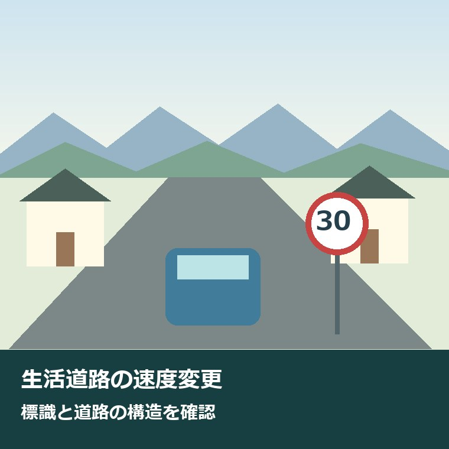
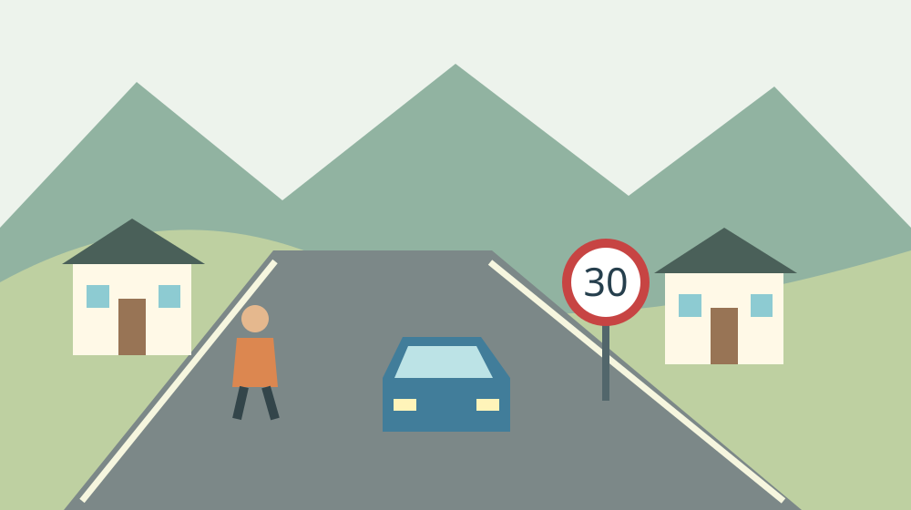
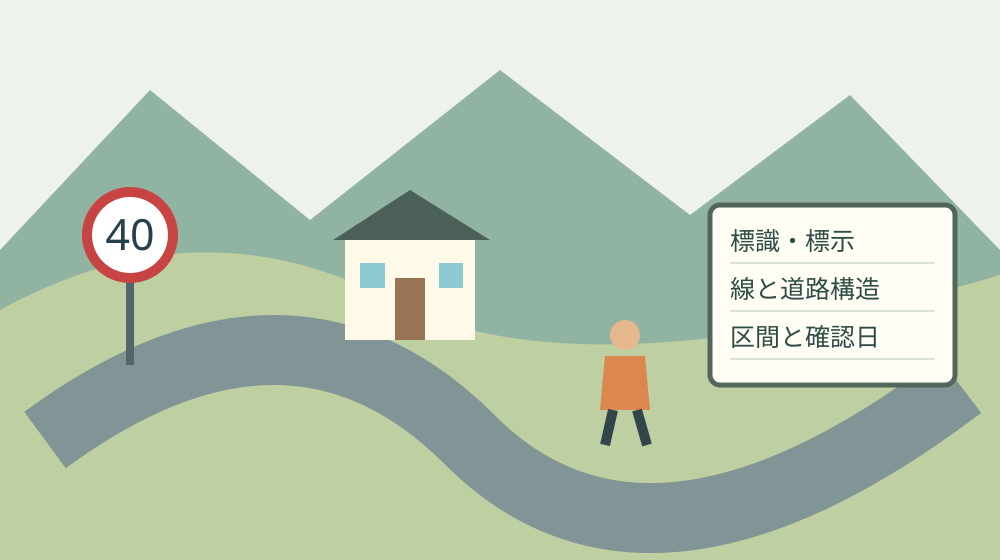

森町の生活道路は何キロ？9月からの速度変更

森町のいつもの道を、送迎する側から確かめる
森町で通学の見守りや家族の送迎を担う人は、出発時刻だけを気にしているわけではありません。玄関から道へ出る子ども、曲がり角の見通し、迎えを待つ場所にも目を配ります。その時間と気遣いを前提に、2026年9月の速度変更を暮らしの段取りへ落とし込みます。
この記事で扱う『何キロ』は、道路の総延長ではなく自動車の最高速度です。住宅地や集落内を運転する人が、普段の道の規制を知るための整理です。森町の全道路を現地調査した一覧ではなく、国の共通ルールと、一本ずつ確かめる手順を分けて示します。
私は大石浩之（磐田市／不動産業）です。家の立地を考えるとき、車で何分という数字だけでは暮らしは見えないと考えます。家までの細い道を誰が運転し、誰が歩き、迎えに行けない日にどうするか。速度の変更も、その条件の一つとして確認したいのです。
今回のルールを知っただけで、町の見守りの負担がなくなるわけではありません。家族ができる小さな一歩は、いつもの道の標識を確認することです。住宅の候補地から生活圏を考える際は、森町の住所選びと通勤・買い物・災害地図も合わせて参照できます。
2026年9月1日の変更と、変わらない道路
警察庁の案内によると、2026年9月1日から生活道路における自動車の法定速度が60km/hから30km/hへ引き下げられました。主な対象は、地域の暮らしに使われる中央線等のない道路です。2026年9月25日時点では、すでに施行後のルールとして確認します。
法定速度とは、道路標識等で最高速度が指定されていない場合に、法令で決まる最高速度です。『標識がないなら速度の決まりもない』という意味ではありません。変更後は、標識を見かけない細い道でも、道路の区分から法定速度を判断する必要があります。
中央線や車両通行帯が設けられた一般道路は、今回30km/hへ変わる対象ではありません。中央分離帯等により往復の方向が分離された一般道路も同様です。警察庁は、これらの道路の法定速度は引き続き60km/hと説明しています。道路の広さの印象だけで分類しません。
自動車専用道路なども今回の引下げの対象外です。高速自動車国道については、本線車道等とは区別した説明が警察庁のページにあります。この記事の住宅地の道の話を、高速道路の本線の速度へそのまま当てはめないでください。
町道か県道か、家が並んでいるかという呼び方だけでは答えは決まりません。森地区、一宮地区、三倉地区といった地区名も、最高速度を一つに決める単位ではありません。実際に走る区間の標識、標示、中央線等、方向を分ける構造を確認します。

指定速度があるときは、30という数字だけで判断しない
警察庁は、道路標識または道路標示により最高速度が指定された道路では、指定された速度が自動車の最高速度になると案内しています。今回の変更で先に確認したいのは、目の前の道に有効な速度指定があるかです。地図アプリの表示だけで現地の規制を置き換えません。
意外に感じるかもしれませんが、法定速度が30km/hの道路でも、40km/hの指定があれば最高速度は40km/hです。警察庁の案内はこの例を明示しています。反対に、法定速度が60km/hでも30km/hの指定があれば、最高速度は30km/hです。
ただし、最高速度はその速度まで常に出してよいという約束ではありません。警察庁は、規制の範囲内でも道路や交通の状況、天候、視界を考え、安全な速度で走るよう求めています。家の出入口や見通しの悪い曲がり角では、数字の確認と周囲の確認を両方行います。
道路の端の線を見て、中央線があると早合点しないことも確認上の注意です。線が何を示しているか分からなければ、写真だけで規制を断定せず、場所と進行方向を整理して警察へ問い合わせます。白い線が見えるという一つの情報では足りません。
標識が樹木で見えにくい、標示が読みにくいなどの状況は、運転しながらスマートフォンで撮影しません。安全な場所で停車した後に位置を記録するか、同乗者が無理のない範囲で確認します。確認のために新たな危険を作らない順序を守ります。
森町の生活圏では、道路の使われ方も一緒に見る
森町の生活道路を考える際は、家族の車だけでなく、歩行者、自転車、農作業の移動も視野に入れます。森町の農業機械に関する案内は、道路に落ちた土や泥が通行を妨げ、滑りやすさにつながると説明しています。速度のルールと路面の状態は別々の確認項目です。
町は田畑から公道へ出る前にできるだけ土や泥を落とし、汚してしまった場合は速やかに除去・清掃するよう案内しています。農作業を支える人にも準備と片付けの負担があります。家族で手伝える段取りは、農機の泥落としと公道に出る前の準備で整理しています。
私は、送迎の時間を考えるとき、玄関から大きな道路へ出るまでを独立した区間として見るのがよいと考えます。幹線道路の走行時間だけでは、住宅前の確認や乗り降りの時間が抜けます。今日は出発時刻を急に決め直すより、どの区間を確かめるか家族で共有するところから始められます。
防災の経路は速度の規制図とは別です。森町防災ハザードマップは、土砂災害や河川氾濫の想定、避難所等の位置を確認する資料です。普段の送迎路を見直す際も、速度が分かったことを災害時の通行保証とは考えず、目的の違う資料として重ねて使います。
良い点｜標識がない道にも、家族で話せる基準ができる
生活道路の法定速度の変更は、速度標識を見かけない道を家族で確認し直すきっかけになります。警察庁の案内は、対象道路、対象外の道路、指定速度の優先を分けて示しています。私は、この分け方をそのまま家族の確認順に使える点を評価します。
『この辺りは危ないから気を付けて』という言葉だけでは、初めて送迎する家族に場所が伝わりません。標識の位置、中央線の有無、見通しの悪い角を別々に示せば、頼まれた人が何を見るかを具体化できます。見守る人の注意を、家族が受け取れる情報に変えられます。
法定速度と指定速度を区別する知識は、町外から実家へ来る家族にも共有できます。森町の道を毎日走る人だけに案内役を任せず、帰省する側が公式説明を読んでおく。現地で何度も説明する手間を減らす方法として、私はその分担に意味があると考えます。
ただし、この良さが生きる条件は、全国共通の説明と現地の規制をつなぐことです。記事を読んだだけで全区間の確認が済んだとはしません。家庭内で一つの経路を選び、確認した日と区間を記すなら、次の送迎担当も同じ場所を見直しやすくなります。
注文したい点｜見守りの善意に、確認まで積み上げない
速度の変更を暮らしに生かすには、普段の道路にどう当てはまるかという最後の確認が残ります。本記事では森町の全路線の標識や中央線を現地確認していません。町内の対象道路の総延長や、各路線の最高速度の一覧も示せません。分からない道を推測で色分けすることは避けます。
私は、確認作業まで見守り担当の人に集中させるのは避けたいと考えます。朝夕に立つ人、通院へ送る人、家族へ説明する人が同じなら、役割を足すほど負担が増えます。今日できる対案は、送迎を頼む側が警察庁のページを読み、自分の移動区間を一つ調べて持ち寄ることです。
家の前だけ確認しても、送迎先までの途中で道路の区分や指定速度が変わる場合があります。一本の経路全体に同じ数字を書き込む方法には限界があります。家族のメモは曲がる場所や区間の切れ目で分け、未確認の場所を空欄ではなく『未確認』と残す方法を勧めます。
私は、何分早く家を出せば足りるかまでは、この制度の数字から決められません。信号、乗り降り、混雑で必要時間は変わるからです。理論上の速度差だけで所要時間を計算せず、余裕のある日に無理なく経路を確認し、送迎担当が引き受けられる時刻を相談したいところです。

対案・結論｜今日は普段の道の標識を一つ確認する
今日の行動は、普段使う生活道路の標識・標示を確認することです。まず自宅から送迎先までのうち、迷っている区間を一つ選びます。入口と出口になる目印を決めると、家族同士で違う道を思い浮かべたまま話すことを防げます。
次に、その区間の速度指定を確認します。指定が見当たらない場合は、中央線や車両通行帯、往復の方向を分ける構造などを確かめます。確認順は資料を読んでから現地へ進む形にし、運転中に法令のページを開いたり、標識を探して急停止したりしません。
判断に迷う道は、警察庁の案内に従って都道府県警察本部または警察署へ尋ねます。問い合わせには所在地、近くの目印、進行方向、分からない点を準備します。『森町は何キロですか』より、区間を示して聞く方が必要な説明を受けやすくなります。
家族への連絡は、分かった規制と未確認の区間を分けます。『全部確認した』という曖昧な完了報告にせず、『自宅前のこの区間を9月25日に確認した』と残す形です。確認日以降に標識等が変わる可能性もあるため、現地での確認を続ける前提にします。
家族に残す記録は、経路と担当を同じ紙に
送迎路の記録には、出発地、目的地、使う区間、確認日、確認した人を書きます。最高速度の情報と、乗り降りする場所、見通しの注意は欄を分けます。規制の数字が書いてあるだけで、安全な乗降場所まで決まったと誤解しないための分け方です。
親族の住所や子どもの通学先を含む紙は、家族内の必要な人だけで共有します。地域の情報交換に出す場合も、個人の生活時間や不在予定をそのまま公開しません。道路の確認を進めることと、家族の行動予定を広く知らせることは別の作業です。
送迎できない日の代替も、同じ機会に一つ確認できます。バスやタクシーを利用できるかは、路線、運行日、対象条件ごとに違います。免許返納後に地区に残る移動手段を入口に、家族が使う便や条件を公式情報で確かめる形にします。
家や土地の検討で道路を調べる場合は、交通の速度と不動産上の接道条件を混ぜません。速度が分かっても、境界や私道の権利、建築の条件が確認できたことにはなりません。道路に関する資料は目的を明記して保管し、個別の権利判断は専門家へ渡します。
大石の視点｜注意の言葉より、運転する側の段取りを変える
私はこう考えます。見守る人に注意を足す前に、運転する側の段取りを変える。毎日立つ人や送る人の頑張りを認めるなら、その人が何度も説明しなくて済む準備を家族が引き受けたい。標識を一つ確かめることは小さくても、頼む側が動くという意味があります。
森町に暮らす可能性を考えるとき、静かな環境や土地の広さには魅力があります。同時に、家と生活施設の間を誰がつなぐかを抜きにしては続きません。移動を支える人の時間を、家の価格に載らないからと見落とさない。私は立地を考える際に、その順序を守りたいと考えています。
私には、各家庭で送迎の役割をどこまで分けられるかは分かりません。仕事や介護の事情が違うからです。だから一律の役割表を完成させるより、今日は一本の道の確認だけを一人が引き受ける。できる範囲を具体化する方が、負担を責めずに話を始められると思います。
速度のルールを守ることは、見守りへの感謝の言葉とは別に必要な行動です。親切な誰かが立っているから大丈夫、と運転する側が寄り掛かってはいけません。公式情報を読み、自分が走る道を確認する。実話の紹介ではなく、私自身の判断としてそう書いておきます。
まとめ｜30km/hの原則と指定速度を分けて持ち帰る
森町の生活道路でも、2026年9月1日からの法定速度変更を確認する必要があります。中央線等のない一般道路は原則30km/hですが、対象外の道路があります。道路標識等による指定速度があればその速度が優先するため、地区名や道の印象だけで答えを決めません。
今日の一歩は、普段の道の標識を一つ確かめることです。分からない区間は場所を記録して警察へ確認し、家族には確認日と一緒に伝える。見守りと送迎を担う人の努力を認めながら、運転する側が引き受けられる準備を一つ増やすところから始めます。
よくある質問
森町の生活道路の速度について、対象道路と確認先を三つの質問で整理します。回答は2026年9月25日に確認した警察庁の案内に基づきます。
森町の住宅地の道路は全部30km/hですか？
全部ではありません。2026年9月1日から中央線等のない一般道路の自動車の法定速度は原則30km/hですが、中央線・車両通行帯のある道路や、往復方向を分離した道路などは対象外です。標識・標示で最高速度が指定されていれば指定速度が優先します。地区名ではなく、走る区間の規制と構造を確認してください。
中央線がない道に40km/hの標識があればどうなりますか？
道路標識等で最高速度40km/hが指定されている区間では、自動車の最高速度は40km/hです。警察庁は、法定速度が30km/hでも指定速度が優先する例として説明しています。ただし、その速度で常に安全という意味ではありません。道路状況、交通、天候、視界に応じて安全な速度で走る必要があります。
いつもの道の速度が分からないときは誰に確認しますか？
警察庁は、不明点を都道府県警察本部または警察署へ尋ねるよう案内しています。森町内の所在地、目印、進行方向、分からない標識や線を整理して問い合わせてください。運転中の撮影や検索はせず、安全な場所で記録します。家族へ共有するときは、確認済みの区間と未確認の区間を分けて残します。

公式情報源
2026年9月25日確認。制度・数値・運行案内は変更される場合があります。利用前に公式情報を再確認し、個別の法令・土地・権利の判断は担当窓口や専門家へ相談してください。
- 警察庁：生活道路における自動車の法定速度の引下げ（2026年9月25日確認）
- 森町：トラクターなどの農作業用機械についた土や泥を落として通行しましょう（2026年9月25日確認）
- 森町：森町防災ハザードマップ（2026年9月25日確認）